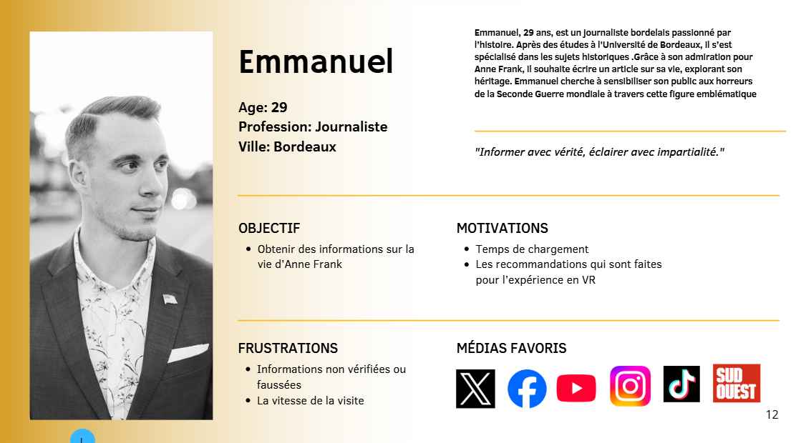
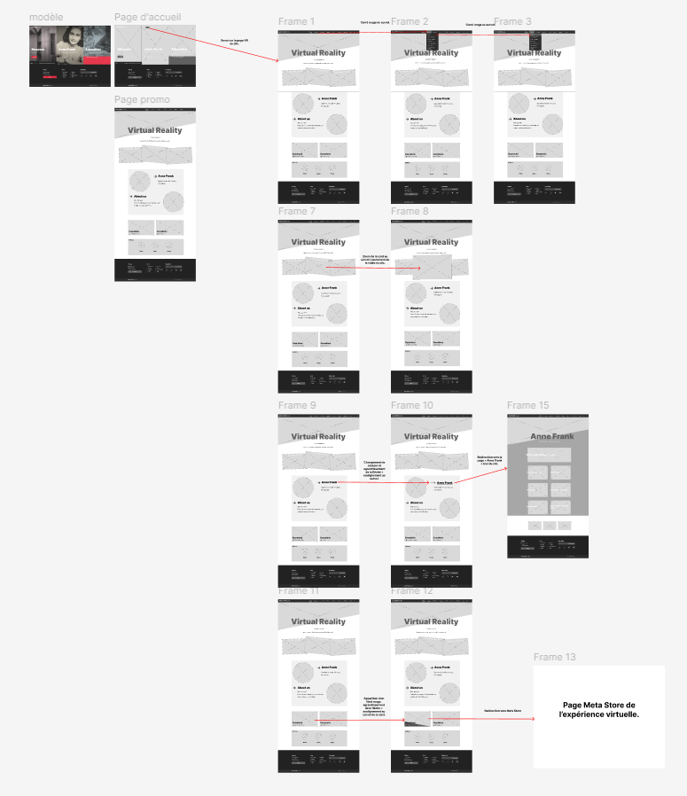
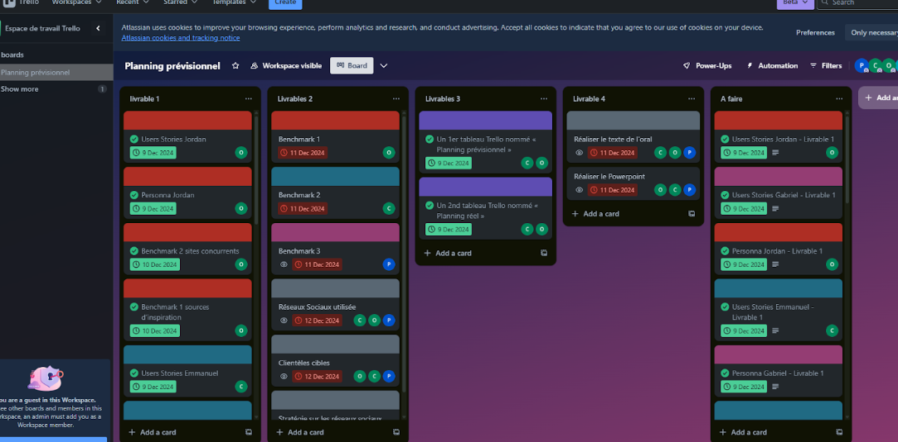

Promotion de l'expérience VR du site d'Anne-Franck
But du projet
L'objectif de ce projet était de concevoir une recommandation stratégique complète pour le lancement et la promotion d'une nouvelle expérience de réalité virtuelle (VR) pour le site d'Anne-Franck.
Ma mission couvrait l'ensemble du cycle de vie du projet : de l'analyse initiale et la conception des maquettes, jusqu'à la planification d'une campagne de communication digitale et la gestion des tâches.
Voir les maquettes sur FigmaMon explication et ma démarche
Pour mener à bien ce projet, j'ai structuré ma démarche en trois phases principales :
1. Analyse & Conception (UX/UI)
La première phase a consisté en une analyse approfondie des cibles via des **personae** et user stories, pour mieux comprendre les attentes de nos futurs utilisateurs. J'ai ensuite réalisé un benchmark concurrentiel et des sources d'inspiration pour affiner notre stratégie.
Cette recherche a abouti à la création de wireframes et de maquettes détaillées sur **Figma**, définissant l'architecture de l'information et le parcours utilisateur pour l'expérience VR.
2. Plan de Communication Digitale
En parallèle, j'ai développé un plan de communication pour les réseaux sociaux. Après avoir analysé les stratégies de 3 concurrents directs, j'ai sélectionné les plateformes les plus pertinentes et défini une ligne éditoriale avec un calendrier de publications.
3. Gestion de Projet
Pour assurer un suivi rigoureux, l'ensemble du projet a été géré sur **Trello**. J'ai mis en place deux tableaux : un "Planning prévisionnel" pour définir les jalons et un "Planning réel" pour suivre l'avancement des tâches quotidiennes et s'adapter aux imprévus.
